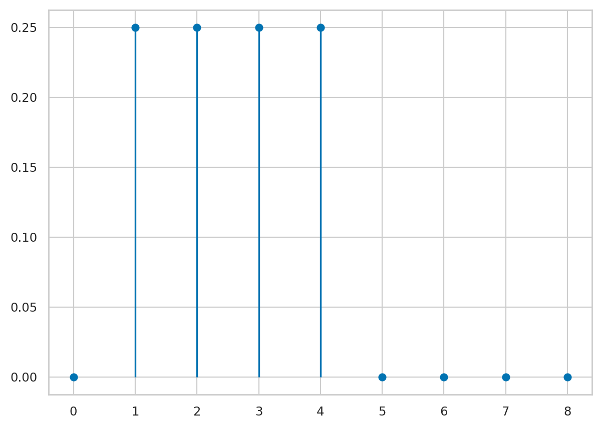
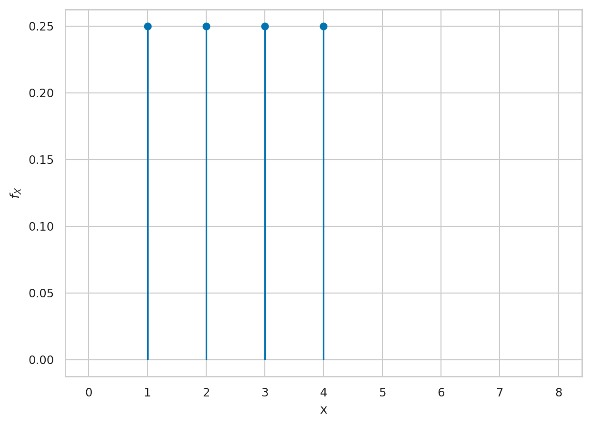
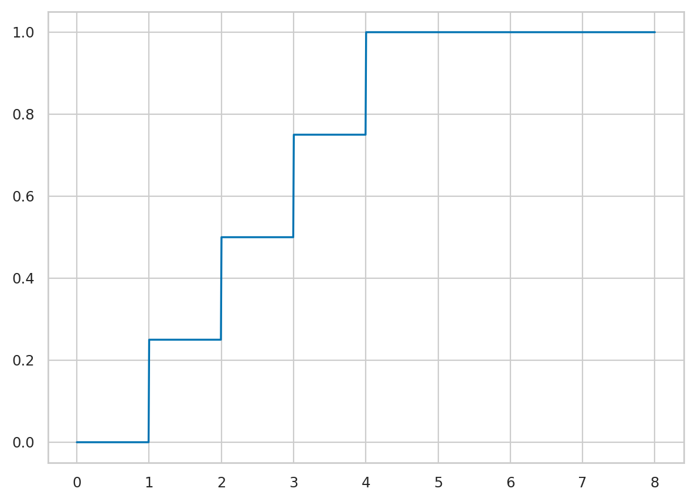
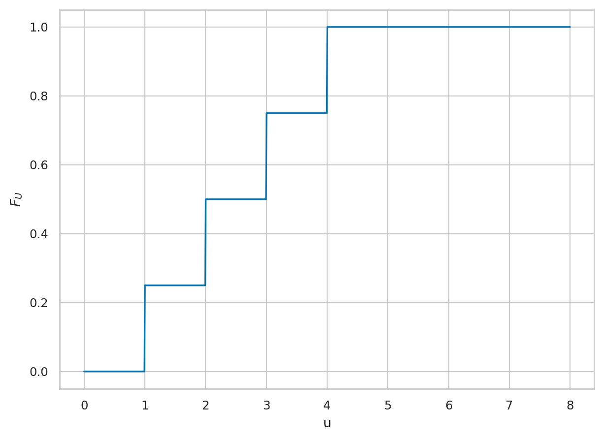
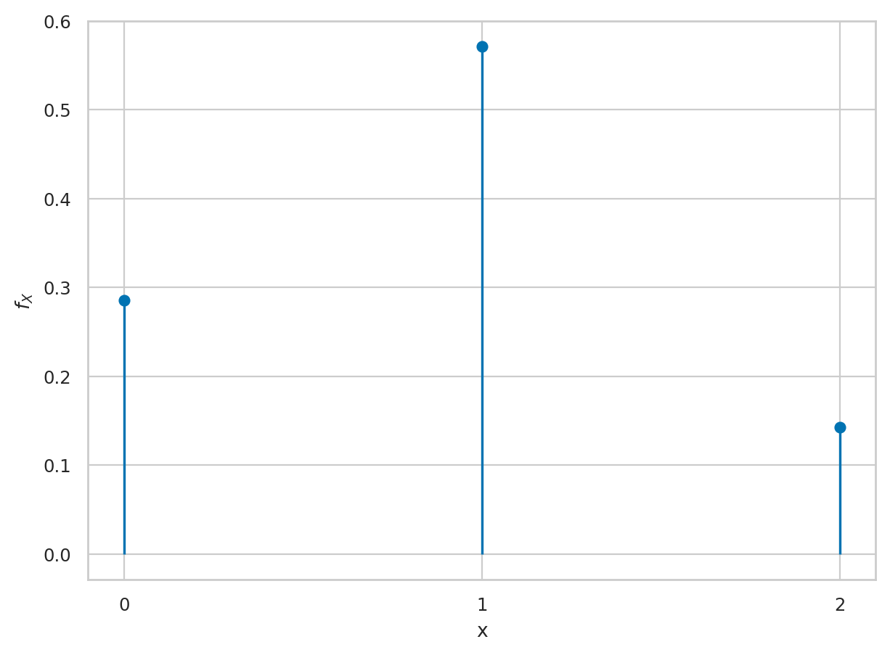

Section 2.3 — Inventory of discrete distributions#
This notebook contains all the code examples from Section 2.3 Inventory of discrete distributions of the No Bullshit Guide to Statistics.

Notebook setup#
# load Python modules
import numpy as np
import pandas as pd
import seaborn as sns
import matplotlib.pyplot as plt
# Figures setup
sns.set_theme(
context="paper",
style="whitegrid",
palette="colorblind",
rc={'figure.figsize': (7,5)},
)
%config InlineBackend.figure_format = 'retina'
# set random seed for repeatability
np.random.seed(42)
%pip install ministats
Requirement already satisfied: ministats in /opt/hostedtoolcache/Python/3.10.16/x64/lib/python3.10/site-packages (0.3.14)
Requirement already satisfied: matplotlib>=3.7 in /opt/hostedtoolcache/Python/3.10.16/x64/lib/python3.10/site-packages (from ministats) (3.10.0)
Requirement already satisfied: numpy>=1.24 in /opt/hostedtoolcache/Python/3.10.16/x64/lib/python3.10/site-packages (from ministats) (1.26.4)
Requirement already satisfied: scipy>=1.6 in /opt/hostedtoolcache/Python/3.10.16/x64/lib/python3.10/site-packages (from ministats) (1.15.1)
Requirement already satisfied: pandas>=2 in /opt/hostedtoolcache/Python/3.10.16/x64/lib/python3.10/site-packages (from ministats) (2.2.3)
Requirement already satisfied: seaborn>=0.13.2 in /opt/hostedtoolcache/Python/3.10.16/x64/lib/python3.10/site-packages (from ministats) (0.13.2)
Requirement already satisfied: statsmodels>=0.14.1 in /opt/hostedtoolcache/Python/3.10.16/x64/lib/python3.10/site-packages (from ministats) (0.14.4)
Requirement already satisfied: bambi in /opt/hostedtoolcache/Python/3.10.16/x64/lib/python3.10/site-packages (from ministats) (0.15.0)
Requirement already satisfied: arviz in /opt/hostedtoolcache/Python/3.10.16/x64/lib/python3.10/site-packages (from ministats) (0.20.0)
Requirement already satisfied: contourpy>=1.0.1 in /opt/hostedtoolcache/Python/3.10.16/x64/lib/python3.10/site-packages (from matplotlib>=3.7->ministats) (1.3.1)
Requirement already satisfied: cycler>=0.10 in /opt/hostedtoolcache/Python/3.10.16/x64/lib/python3.10/site-packages (from matplotlib>=3.7->ministats) (0.12.1)
Requirement already satisfied: fonttools>=4.22.0 in /opt/hostedtoolcache/Python/3.10.16/x64/lib/python3.10/site-packages (from matplotlib>=3.7->ministats) (4.56.0)
Requirement already satisfied: kiwisolver>=1.3.1 in /opt/hostedtoolcache/Python/3.10.16/x64/lib/python3.10/site-packages (from matplotlib>=3.7->ministats) (1.4.8)
Requirement already satisfied: packaging>=20.0 in /opt/hostedtoolcache/Python/3.10.16/x64/lib/python3.10/site-packages (from matplotlib>=3.7->ministats) (24.2)
Requirement already satisfied: pillow>=8 in /opt/hostedtoolcache/Python/3.10.16/x64/lib/python3.10/site-packages (from matplotlib>=3.7->ministats) (11.1.0)
Requirement already satisfied: pyparsing>=2.3.1 in /opt/hostedtoolcache/Python/3.10.16/x64/lib/python3.10/site-packages (from matplotlib>=3.7->ministats) (3.2.1)
Requirement already satisfied: python-dateutil>=2.7 in /opt/hostedtoolcache/Python/3.10.16/x64/lib/python3.10/site-packages (from matplotlib>=3.7->ministats) (2.9.0.post0)
Requirement already satisfied: pytz>=2020.1 in /opt/hostedtoolcache/Python/3.10.16/x64/lib/python3.10/site-packages (from pandas>=2->ministats) (2025.1)
Requirement already satisfied: tzdata>=2022.7 in /opt/hostedtoolcache/Python/3.10.16/x64/lib/python3.10/site-packages (from pandas>=2->ministats) (2025.1)
Requirement already satisfied: patsy>=0.5.6 in /opt/hostedtoolcache/Python/3.10.16/x64/lib/python3.10/site-packages (from statsmodels>=0.14.1->ministats) (1.0.1)
Requirement already satisfied: setuptools>=60.0.0 in /opt/hostedtoolcache/Python/3.10.16/x64/lib/python3.10/site-packages (from arviz->ministats) (65.5.0)
Requirement already satisfied: xarray>=2022.6.0 in /opt/hostedtoolcache/Python/3.10.16/x64/lib/python3.10/site-packages (from arviz->ministats) (2025.1.2)
Requirement already satisfied: h5netcdf>=1.0.2 in /opt/hostedtoolcache/Python/3.10.16/x64/lib/python3.10/site-packages (from arviz->ministats) (1.5.0)
Requirement already satisfied: typing-extensions>=4.1.0 in /opt/hostedtoolcache/Python/3.10.16/x64/lib/python3.10/site-packages (from arviz->ministats) (4.12.2)
Requirement already satisfied: xarray-einstats>=0.3 in /opt/hostedtoolcache/Python/3.10.16/x64/lib/python3.10/site-packages (from arviz->ministats) (0.8.0)
Requirement already satisfied: formulae>=0.5.3 in /opt/hostedtoolcache/Python/3.10.16/x64/lib/python3.10/site-packages (from bambi->ministats) (0.5.4)
Requirement already satisfied: graphviz in /opt/hostedtoolcache/Python/3.10.16/x64/lib/python3.10/site-packages (from bambi->ministats) (0.20.3)
Requirement already satisfied: pymc>=5.18.0 in /opt/hostedtoolcache/Python/3.10.16/x64/lib/python3.10/site-packages (from bambi->ministats) (5.20.1)
Requirement already satisfied: h5py in /opt/hostedtoolcache/Python/3.10.16/x64/lib/python3.10/site-packages (from h5netcdf>=1.0.2->arviz->ministats) (3.12.1)
Requirement already satisfied: cachetools>=4.2.1 in /opt/hostedtoolcache/Python/3.10.16/x64/lib/python3.10/site-packages (from pymc>=5.18.0->bambi->ministats) (5.5.1)
Requirement already satisfied: cloudpickle in /opt/hostedtoolcache/Python/3.10.16/x64/lib/python3.10/site-packages (from pymc>=5.18.0->bambi->ministats) (3.1.1)
Requirement already satisfied: pytensor<2.28,>=2.26.1 in /opt/hostedtoolcache/Python/3.10.16/x64/lib/python3.10/site-packages (from pymc>=5.18.0->bambi->ministats) (2.27.1)
Requirement already satisfied: rich>=13.7.1 in /opt/hostedtoolcache/Python/3.10.16/x64/lib/python3.10/site-packages (from pymc>=5.18.0->bambi->ministats) (13.9.4)
Requirement already satisfied: threadpoolctl<4.0.0,>=3.1.0 in /opt/hostedtoolcache/Python/3.10.16/x64/lib/python3.10/site-packages (from pymc>=5.18.0->bambi->ministats) (3.5.0)
Requirement already satisfied: six>=1.5 in /opt/hostedtoolcache/Python/3.10.16/x64/lib/python3.10/site-packages (from python-dateutil>=2.7->matplotlib>=3.7->ministats) (1.17.0)
Requirement already satisfied: filelock>=3.15 in /opt/hostedtoolcache/Python/3.10.16/x64/lib/python3.10/site-packages (from pytensor<2.28,>=2.26.1->pymc>=5.18.0->bambi->ministats) (3.17.0)
Requirement already satisfied: etuples in /opt/hostedtoolcache/Python/3.10.16/x64/lib/python3.10/site-packages (from pytensor<2.28,>=2.26.1->pymc>=5.18.0->bambi->ministats) (0.3.9)
Requirement already satisfied: logical-unification in /opt/hostedtoolcache/Python/3.10.16/x64/lib/python3.10/site-packages (from pytensor<2.28,>=2.26.1->pymc>=5.18.0->bambi->ministats) (0.4.6)
Requirement already satisfied: miniKanren in /opt/hostedtoolcache/Python/3.10.16/x64/lib/python3.10/site-packages (from pytensor<2.28,>=2.26.1->pymc>=5.18.0->bambi->ministats) (1.0.3)
Requirement already satisfied: cons in /opt/hostedtoolcache/Python/3.10.16/x64/lib/python3.10/site-packages (from pytensor<2.28,>=2.26.1->pymc>=5.18.0->bambi->ministats) (0.4.6)
Requirement already satisfied: markdown-it-py>=2.2.0 in /opt/hostedtoolcache/Python/3.10.16/x64/lib/python3.10/site-packages (from rich>=13.7.1->pymc>=5.18.0->bambi->ministats) (3.0.0)
Requirement already satisfied: pygments<3.0.0,>=2.13.0 in /opt/hostedtoolcache/Python/3.10.16/x64/lib/python3.10/site-packages (from rich>=13.7.1->pymc>=5.18.0->bambi->ministats) (2.19.1)
Requirement already satisfied: mdurl~=0.1 in /opt/hostedtoolcache/Python/3.10.16/x64/lib/python3.10/site-packages (from markdown-it-py>=2.2.0->rich>=13.7.1->pymc>=5.18.0->bambi->ministats) (0.1.2)
Requirement already satisfied: toolz in /opt/hostedtoolcache/Python/3.10.16/x64/lib/python3.10/site-packages (from logical-unification->pytensor<2.28,>=2.26.1->pymc>=5.18.0->bambi->ministats) (1.0.0)
Requirement already satisfied: multipledispatch in /opt/hostedtoolcache/Python/3.10.16/x64/lib/python3.10/site-packages (from logical-unification->pytensor<2.28,>=2.26.1->pymc>=5.18.0->bambi->ministats) (1.0.0)
[notice] A new release of pip is available: 25.0 -> 25.0.1
[notice] To update, run: pip install --upgrade pip
Note: you may need to restart the kernel to use updated packages.
from ministats import plot_pmf
from ministats import plot_cdf
Definitions#
Math prerequisites#
Combinatorics#
See SciPy docs:
https://docs.scipy.org/doc/scipy/reference/generated/scipy.special.factorial.html
https://docs.scipy.org/doc/scipy/reference/generated/scipy.special.perm.html
https://docs.scipy.org/doc/scipy/reference/generated/scipy.special.comb.html
Factorial#
from scipy.special import factorial
# ALT.
# from math import factorial
factorial(4)
24.0
factorial(1), factorial(2), factorial(3)
(1.0, 2.0, 6.0)
[factorial(k) for k in [5,6,7,8,9,10,11,12]]
[120.0, 720.0, 5040.0, 40320.0, 362880.0, 3628800.0, 39916800.0, 479001600.0]
factorial(15)
1307674368000.0
import numpy as np
np.log(factorial(15))/np.log(10)
12.116499611123398
Permutations#
from scipy.special import perm
perm(5,2)
20.0
perm(5,1), perm(5,2), perm(5,3), perm(5,4), perm(5,5)
(5.0, 20.0, 60.0, 120.0, 120.0)
If you want to actually see, all the possible permutations we
use the permutations function from itertools
from itertools import permutations
n = 5
nitems = range(1,n+1)
k = 2
list(permutations(nitems, k))
[(1, 2),
(1, 3),
(1, 4),
(1, 5),
(2, 1),
(2, 3),
(2, 4),
(2, 5),
(3, 1),
(3, 2),
(3, 4),
(3, 5),
(4, 1),
(4, 2),
(4, 3),
(4, 5),
(5, 1),
(5, 2),
(5, 3),
(5, 4)]
Combinations#
from scipy.special import comb
comb(5,2)
10.0
from itertools import combinations
n = 5
k = 2
list(combinations(range(1,n+1), k))
[(1, 2),
(1, 3),
(1, 4),
(1, 5),
(2, 3),
(2, 4),
(2, 5),
(3, 4),
(3, 5),
(4, 5)]
Summations using basic Python#
N = 10
nums = range(1,N+1)
list(nums)
[1, 2, 3, 4, 5, 6, 7, 8, 9, 10]
sum(nums)
55
N*(N+1)/2 # formula
55.0
squarednums = [num**2 for num in nums]
squarednums
[1, 4, 9, 16, 25, 36, 49, 64, 81, 100]
sum(squarednums)
385
N*(N+1)*(2*N+1)/6 # formula
385.0
cubednums = [num**3 for num in nums]
cubednums
[1, 8, 27, 64, 125, 216, 343, 512, 729, 1000]
sum(cubednums)
3025
( N*(N+1)/2 )**2 # formula
3025.0
Sum of the geometric series#
a = 0.5
r = 0.5
sum([a*r**k for k in range(0,60)])
1.0
Summations using SymPy (bonus material)#
from sympy import symbols
from sympy import summation
from sympy import simplify
k, N, r = symbols("k N r")
Sum of arithmetic sequence#
a_k = k
summation(a_k, (k,0, N))
simplify(summation(a_k, (k,0, N)))
Sum of squares#
b_k = k**2
simplify(summation(b_k, (k,0, N)))
Sum of cubes#
c_k = k**3
simplify(summation(c_k, (k,0, N)))
Geometric series#
g_k = r**k
summation(g_k, (k,0, N))
# from sympy import limit, oo
# limit( (1-r**(N+1))/(1-r), N, oo)
# # doesn't work; need to specify assumption r < 1
Discrete distributions reference#
Discrete uniform#
# import the model family
from scipy.stats import randint
# choose parameters
alpha = 1 # start at
beta = 4 # stop at
# create the rv object
rvU = randint(alpha, beta+1)
# use one of the rv object's methods
The limits of the sample space of the random variable rvU
can be obtained by calling its .support() method.
rvU.support()
(1, 4)
rvU.mean()
2.5
rvU.var()
1.25
rvU.std() # = np.sqrt(rvU.var())
1.118033988749895
Probability mass function#
for x in range(1,4+1):
print("f_U(",x,") = ", rvU.pmf(x))
f_U( 1 ) = 0.25
f_U( 2 ) = 0.25
f_U( 3 ) = 0.25
f_U( 4 ) = 0.25
To create a stem-plot of the probability mass function \(f_U\), we can use the following three-step procedure:
Create a range of inputs
xsfor the plot.Compute the value of \(f_U =\)
rvUfor each of the inputs and store the results as list of valuesfUs.Plot the values
fUsby calling the functionplt.stem(xs,fUs).
import numpy as np
import matplotlib.pyplot as plt
xs = np.arange(0,8+1)
fUs = rvU.pmf(xs)
plt.stem(xs, fUs, basefmt=" ")
<StemContainer object of 3 artists>
{kind=link}

# ALT
plot_pmf(rvU, xlims=[0,8+1])
<Axes: xlabel='x', ylabel='$f_{X}$'>
{kind=link}

Cumulative distribution function#
for b in range(1,4+1):
print("F_U(", b, ") = ", rvU.cdf(b))
F_U( 1 ) = 0.25
F_U( 2 ) = 0.5
F_U( 3 ) = 0.75
F_U( 4 ) = 1.0
import numpy as np
import seaborn as sns
xs = np.linspace(0,8,1000)
FUs = rvU.cdf(xs)
sns.lineplot(x=xs, y=FUs)
<Axes: >
{kind=link}

# ALT
plot_cdf(rvU, xlims=[0,8], rv_name="U")
<Axes: xlabel='u', ylabel='$F_{U}$'>
{kind=link}

Let’s generate 10 random observations from random variable rvU:
rvU.rvs(10)
array([3, 4, 1, 3, 3, 4, 1, 1, 3, 2])
Bernoulli#
from scipy.stats import bernoulli
rvB = bernoulli(p=0.3)
rvB.support()
(0, 1)
rvB.mean(), rvB.var()
(0.3, 0.21)
rvB.rvs(10)
array([0, 0, 1, 0, 1, 0, 1, 1, 0, 0])
plot_pmf(rvB, xlims=[0,5]);
{kind=link}
Poisson#
from scipy.stats import poisson
lam = 10
rvP = poisson(lam)
rvP.pmf(8)
0.11259903214902009
rvP.cdf(8)
0.3328196787507191
## ALT. way to compute the value F_P(8) =
# sum([rvP.pmf(x) for x in range(0,8+1)])
plot_pmf(rvP, xlims=[0,30]);
{kind=link}
Binomial#
We’ll use the name rvX because rvB was already used for the Bernoulli random variable above.
from scipy.stats import binom
n = 20
p = 0.14
rvX = binom(n,p)
rvX.support()
(0, 20)
rvX.mean(), rvX.var()
(2.8000000000000003, 2.4080000000000004)
plot_pmf(rvX, xlims=[0,30]);
{kind=link}
Geometric#
from scipy.stats import geom
rvG = geom(p = 0.2)
rvG.support()
(1, inf)
rvG.mean(), rvG.var()
(5.0, 20.0)
plot_pmf(rvG, xlims=[0,40]);
{kind=link}
Negative binomial#
from scipy.stats import nbinom
r = 10
p = 0.5
rvN = nbinom(r,p)
rvN.support()
(0, inf)
rvN.mean(), rvN.var()
(10.0, 20.0)
plot_pmf(rvN, xlims=[0,40]);
{kind=link}
Hypergeometric#
from scipy.stats import hypergeom
a = 30 # number of success balls
b = 40 # number of failure balls
n = 20 # how many we're drawing
rvH = hypergeom(a+b, a, n)
rvH.support()
(0, 20)
rvH.mean(), rvH.var()
(8.571428571428571, 3.54924578527063)
meanH, stdH = rvH.stats()
print("mean =", meanH, " std =", stdH)
mean = 8.571428571428571 std = 3.54924578527063
plot_pmf(rvH, xlims=[0,30]);
{kind=link}
Tomatoes salad probabilities#
a = 3 # number of good tomatoes
b = 4 # number of rotten tomatoes
n = 2 # how many we're drawing
rvHe = hypergeom(a+b, a, n)
plot_pmf(rvHe, xlims=[0,3])
rvHe.pmf(0), rvHe.pmf(1), rvHe.pmf(2)
(0.28571428571428575, 0.5714285714285715, 0.14285714285714288)
{kind=link}

Number of dogs seen by Amy#
a = 7 # number dogs
b = 20 - 7 # number of other animals
n = 12 # how many "patients" Amy will see today
rvD = hypergeom(a+b, a, n)
# Pr of exactly five dogs
rvD.pmf(5)
0.2860681114551084
plot_pmf(rvD, xlims=[0,10]);
{kind=link}
Multinomial#
See docs.
from scipy.stats import multinomial
n = 10
ps = [0.1, 0.5, 0.8]
rvM = multinomial(n,ps)
rvM.rvs()
array([[0, 6, 4]])
# TODO: 3D scatter plot of points in space
Modelling real-world data using probability#
TODO: add simple inference and plots